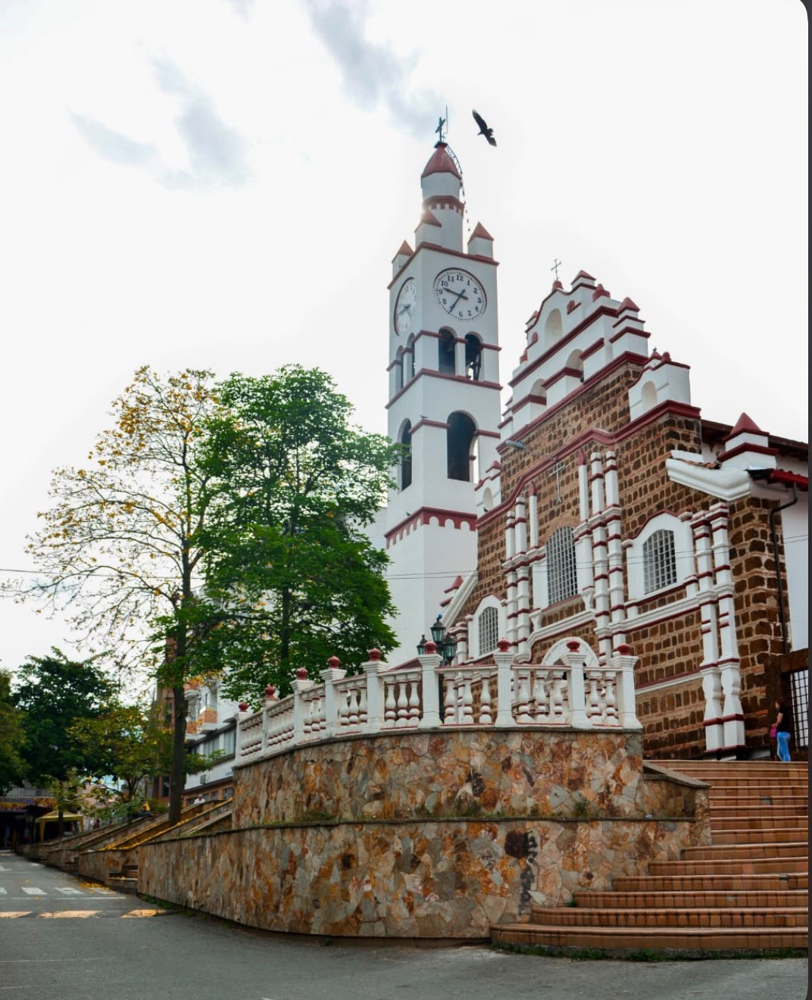
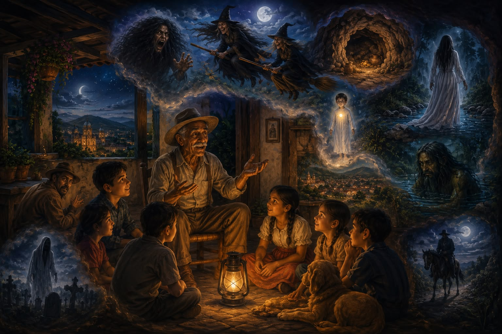
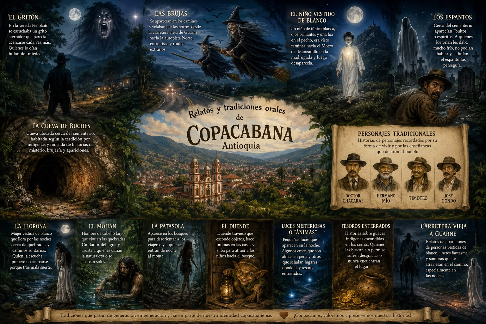
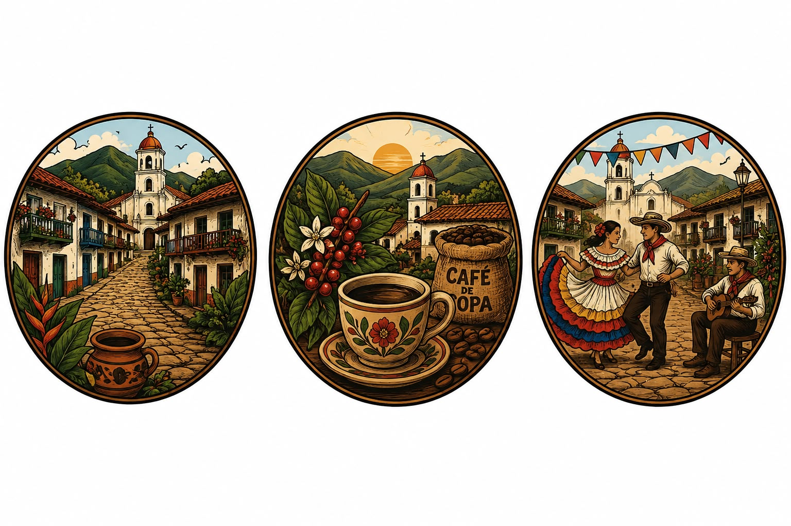

El Gritón
En la vereda Peñolcito se escuchaba un grito aterrador que parecía acercarse cada vez más. Quienes lo oían huían del miedo.
Descubre nuevas aventuras

Historias que se cuentan al calor de la lámpara
Un archivo vivo de las leyendas, apariciones y personajes que los abuelos de Copacabana, Antioquia, han transmitido de generación en generación: brujas en la carretera vieja, luces que señalan tesoros, y espantos que aún rondan el cementerio.
La tradición oral
En Copacabana, Antioquia, muchas historias nunca se escribieron: se contaron. En los patios, en los caminos veredales y alrededor de una lámpara encendida, generaciones enteras han compartido relatos de brujas que vuelan por la carretera vieja a Guarne, niños de túnica blanca que caminan hacia el Morro del Manzanillo, y espantos que persiguen a quien huye cerca del cementerio.
Estas historias no son solo para asustar: son identidad. Enseñan a respetar la naturaleza, a cuidar el agua, a no rondar solos de noche y a valorar la memoria de quienes ya no están. Esta página reúne esas voces, sus personajes y los lugares donde —según se cuenta— todavía se aparecen.

Doce relatos que aún se cuentan
En la vereda Peñolcito se escuchaba un grito aterrador que parecía acercarse cada vez más. Quienes lo oían huían del miedo.
Se aparecen en los caminos y vuelan por las noches desde la carretera vieja de Guarne hacia la autopista Norte, entre risas y ruidos extraños.
Un niño de túnica blanca, ojos brillantes y una luz en el pecho, era visto caminando hacia el Morro del Manzanillo en la madrugada; luego desaparecía.
Cerca del cementerio aparecían "bultos" o espíritus. A quienes los veían les daba mucho frío, no podían hablar, y si huían, el espanto los perseguía.
Mujer vestida de blanco que llora por las noches cerca de quebradas y caminos solitarios. Quien la escucha prefiere no acercarse, porque trae mala suerte.
Relatos de apariciones de personas vestidas de blanco, jinetes fantasma y sombras que se atraviesan en el camino, especialmente en las noches.
Hombre de cabello largo que vive en las quebradas. Cuidador del agua, asusta a quienes dañan la naturaleza o se acercan solos.
Aparece en los bosques para desorientar a los viajeros y a quienes entran de noche al monte.
Duende travieso que esconde objetos, hace bromas en las casas y silba para atraer a los niños hacia el bosque.
Cueva ubicada cerca del cementerio, habitada según la tradición por indígenas y rodeada de historias de misterio, brujería y apariciones.
Pequeñas luces que aparecen en la noche. Algunos creen que son almas en pena; otros, que señalan lugares donde hay tesoros enterrados.
Historias sobre guacas indígenas escondidas en los cerros. Quienes las buscan sin permiso sufren desgracias o nunca encuentran el lugar.
Memoria del pueblo
Historias de personajes recordados por su forma de vivir y por las enseñanzas que dejaron al pueblo.
Imágenes del relato
Toca cualquier imagen para ampliarla.


Los relatos en movimiento
Reproduce cada video directamente aquí, o toca el ícono para verlo en pantalla completa.
Un recorrido narrado por las historias y personajes más recordados del municipio.
Las apariciones y espantos que, según la tradición, aún rondan los caminos del pueblo.
Una pieza corta que recrea, en imagen y voz, una de las leyendas del municipio.
Para escuchar
Un episodio narrado que reúne las leyendas y tradiciones orales del municipio, generado a partir de este mismo archivo de historias. Se abre en una pestaña nueva, alojado en NotebookLM.
Escuchar el podcast